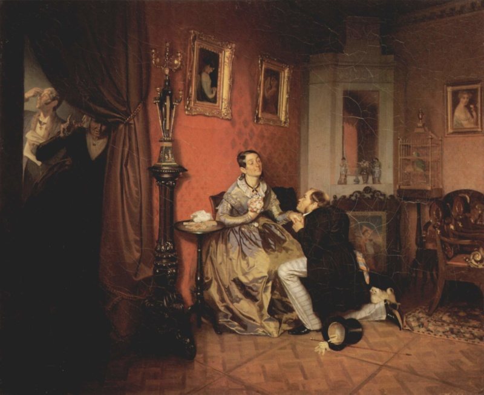
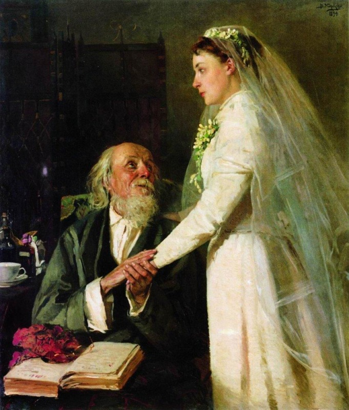

Family (Marriage)

In Anna Karenina, marriage signifies more than a legal union between spouses. For Tolstoy, marriage is a union that carries moral significance. Through marriage, he examines the even larger concept of family. Tolstoy distinguished Anna Karenina from his previous novel, War and Peace, by centering it on family rather than national identity. Marriage, therefore, is not a simple social tradition, but rather a crucial institution where love is tested. As Tolstoy demonstrates, marriage may or may not become stable or spiritually meaningful. The novel challenges both empty social conceptions of marriage and the fantasy that extramarital romance may provide true freedom. Ultimately, Tolstoy redefines marriage as a sacred but difficult, taxing union; it is not holy by definition but may become holy when it contains love, forgiveness, shared responsibility, and family.
This treatment of marriage places Tolstoy in conversation with several nineteenth-century intellectual and literary traditions. First, Anna Karenina responds to the European adultery novel tradition, in which marital issues reveal broader societal tensions surrounding sexuality and gender. Both Flaubert’s Madame Bovary and Tolstoy’s Anna Kareninaa reflect this tradition. Like Flaubert, Tolstoy writes about a married woman who seeks fulfillment outside of an unsatisfying marriage (Meyer). However, Anna Karenina subverts the traditional adultery plot, as Anna’s affair does not constitute the novel's moral structure. Tolstoy also includes the positive line of Levin and Kitty, whose marriage offers an alternative to both loveless marriage and adulterous passion. Second, Tolstoy engages with the contemporary “woman question,” a topic that included debates surrounding women’s independence, sexuality, education, and divorce (Lounsbery). Anna’s suffering exposes the cruelty of a society that does not provide her an acceptable way to leave her husband while keeping her son and living with Vronsky. Tolstoy does not solve this problem by simply endorsing freedom from marriage. Rather, he questions whether liberation based solely on passion can sustain a meaningful life. Schopenhauer is especially important for understanding Tolstoy’s suspicion of passion. He treats sexual passion as a reflection of reproductive drive rather than a route to lasting happiness. Once desire is satisfied, the person is left with emptiness and dissatisfaction (Woolfe). Tolstoy’s treatment of Anna and Vronsky follows a similar logic. Their relationship begins as a romantic escape, but once their passion is finally fulfilled, they experience boredom, jealousy, and spiritual restlessness. The first failed model of marriage appears in Karenin and Anna’s relationship. Karenin understands marriage in explicitly moral and religious terms, but Tolstoy shows that his version of marriage is deficient because it is governed by social appearances rather than by love. Before confronting Anna about her affair, Karenin plans to explain “firstly… the significance of public opinion and decorum; secondly… the religious significance of marriage” (Tolstoy 147). His prioritization of “public opinion” reveals his conception of marriage; Karenin claims to defend marriage's sacredness, but his first concern is his reputation. When he tells Anna, “I am your husband, and I love you,” Anna thinks, “Love? Is he capable of love? … He doesn’t even know what love is” (Tolstoy 149–150). Their marriage has legal and religious meaning, but it lacks intimacy. Through them, Tolstoy criticizes marriage when it becomes no more than a social arrangement protected by status and duty. Anna and Vronsky represent the opposite failure — love without marriage, family, or responsibility. At first, their affair seems to offer the passion missing from Anna’s marriage, but Tolstoy steadily reveals that passion alone cannot create a complete life. Even in Italy, after Vronsky achieved “the complete fulfillment of what he had desired for so long, [he] was not completely happy” (Tolstoy 467). Anna is even more restless. She tells Dolly that her son and Vronsky are “the only two beings I love,” but “the one excludes the other,” and, because she cannot unite them, she says, “I don’t care about anything” (Tolstoy 643). Her passion does not free her from motherhood, guilt, or social reality. Instead, it separates the parts of her life from one another. Children are also central to Tolstoy’s concept of family and marriage because they reveal whether love can be translated into responsibility. Anna’s tragedy is not only that she loses social respectability but that her love for Vronsky separates her from her son. Children, therefore, expose the limits of passionate love that is disjoined from a traditional family structure. In contrast, Levin and Kitty’s marriage develops toward family life through shared responsibility, especially as Kitty prepares for motherhood and later gives birth. Children are therefore not secondary to marriage; they can help transform marriage into a morally meaningful family life. Levin and Kitty provide Tolstoy’s positive counterexample, though their marriage is not idealized. Their wedding scene affirms marriage as spiritually sacred. Kitty “could not conceive of or wish for anything beyond life with this man,” and Levin is overwhelmed by a meaning of marriage that he “had not yet understood” (Tolstoy 455–456). Still, their marriage is imperfect. Like Anna and Vronsky, they experience jealousy, resentment, and misunderstanding. The difference is that Levin and Kitty work through these misunderstandings, while Anna and Vronsky only worsen them. Through this unyielding love and shared effort, Levin and Kitty’s marriage finds the meaning that Tolstoy promotes. Therefore, Tolstoy neither rejects nor glorifies marriage. He rejects only the idea that marriage is only a social responsibility or that passion may substitute for family. In Anna Karenina, marriage is sacred not because society deems it so but because it can transform desirous love into a holy union. Family life, as Tolstoy depicts, is not an escape from suffering but a demanding relationship from which true love may be realized.
Works Cited
- Lounsbery, Anne. "The Woman Question." Tolstoy in Context, Cambridge University Press, 2023.
- Meyer, Priscilla. "Anna Karenina: Tolstoy's Polemic with Madame Bovary." Russian Review, 1995, pp. 243–259.
- Woolfe, Sam. "Schopenhauer on Sex and Romantic Love." Sam Woolfe, 2020.